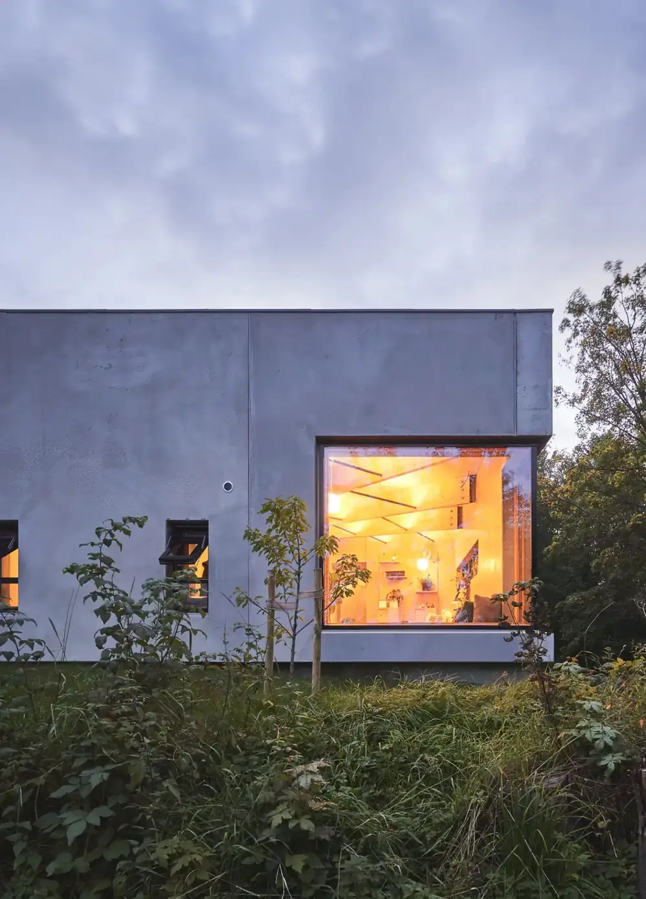

Bygg
Stokkøy matstudio
Et moderne naust med røtter i norsk kystbyggtradisjon. Med verdens beste sjømatråvarer rett ved brygga venter store mat- og naturopplevelser.
Forside / Prosjekter
Vi jobber med bygg, landskap og plan — fra små matstudioer i havgapet til byrom og arenabygg.
Et moderne naust med røtter i norsk kystbyggtradisjon. Med verdens beste sjømatråvarer rett ved brygga venter store mat- og naturopplevelser.

På Norsk Institutt for Naturforskning møtes man til lunsj ute på isbreen — taket er gjort til et landskap.

Inspirasjon fra naturen og utstrakt bruk av tre var en selvfølge da nytt arenabygg for ski ble utformet i skogkanten.

Byens storstue skal brukes til alt — fra kroningsfester til gatesang, og daglig passerer hundrevis av byens innbyggere over plassen.

Sentrum har fått tilbake kontakten med vannet. Med linjeføring fra Romsdalsalpene er den nye havnepromenaden blitt et populært samlingssted.
Et fortettingsprosjekt som bruker tomta to ganger: et frodig småhusmiljø deler tomt med en stor dagligvareforretning. Løsningen er et tak som også er et landskap.
Man går gjennom parken fra øy til øy via trebroer og veier. Mister du retningen, sikter du mot sjømerkene.
For at bydelen skal vokse fram på en fleksibel, bærekraftig og menneskevennlig måte, har vi foreslått et sett spilleregler for utviklinga.
Prosjektbeskrivelsene er hentet fra agraff arkitektur sin egen presentasjon. Bildene viser arbeider fra arkitekturen — ikke nødvendigvis det enkelte prosjektet.
Ta kontakt, så viser vi referanser som ligner det du planlegger.